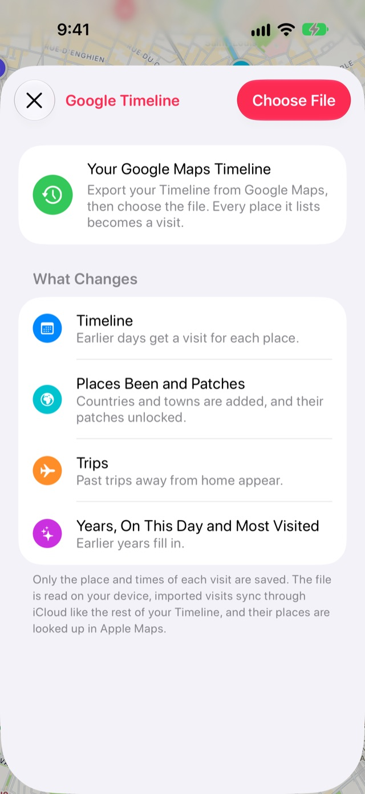
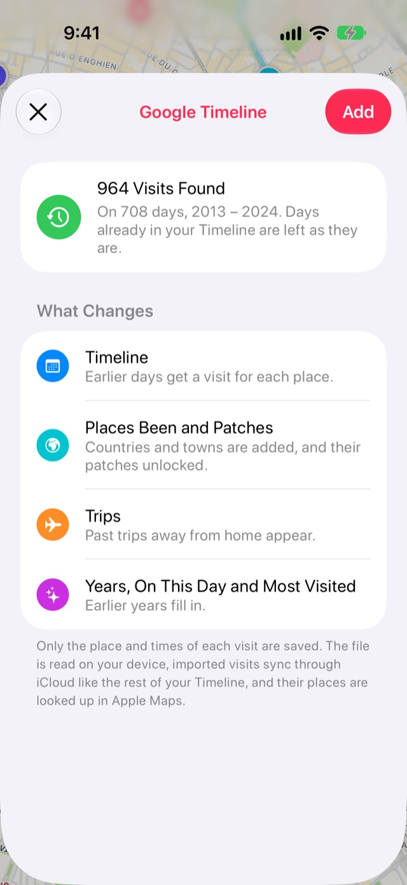

Google 지도 Timeline을 Stops로 가져오는 방법
Google 지도에 Timeline이 남아 있다면, 수년간 다녀온 장소가 휴대폰 안에 고스란히 있습니다. 내보내기만 하면 Stops가 이를 과거 방문으로 바꿔, Stops를 쓰기 전의 여행, 도시, 국가까지 채워 줍니다.
- Stops Pro
- 약 10분
- Android 또는 iPhone 내보내기
준비물
- Stops에서 타임라인 켜기: 저널을 열고 타임라인을 켜세요.
- Stops Pro.
단계별 안내
-
Google에서 Timeline 내보내기
Android에서는 휴대폰의 설정 앱을 열고 위치 › 위치 서비스 › 타임라인으로 이동한 다음 타임라인 데이터 내보내기를 선택하세요. 일부 휴대폰에서는 타임라인이 위치 바로 아래에 있습니다.
iPhone에서는 Google 지도를 열고 프로필 사진을 탭한 다음 설정을 여세요. 타임라인 및 위치 설정에 있는 타임라인 데이터 내보내기를 선택한 다음 파일 앱에 파일을 저장하세요.
파일 이름은 보통 Timeline.json 또는 location-history.json입니다. iCloud Drive나 AirDrop 등을 이용해 iPhone으로 옮기세요.
-
Stops에서 가져오기 열기
탭 막대 끝에 있는 책 버튼으로 저널을 열고 설정 톱니바퀴를 탭하세요. 가져오기를 선택한 다음 Google Timeline에서 가져온 방문을 선택하세요. 파일을 읽기 전에 가져오기로 무엇이 바뀌는지 화면에 표시됩니다.

-
파일 선택하기
파일 선택을 탭하고 내보낸 파일을 고르세요. 예전 Takeout 다운로드는 한 달에 파일 하나씩 제공되었으니, 모두 한꺼번에 선택하세요.
-
찾은 내용을 검토하고 추가하기
Stops가 찾은 방문 수, 날짜 수, 해당 연도를 보여 줍니다. 이미 타임라인에 있는 날은 그대로 유지됩니다. 추가를 탭하세요.

-
저널이 만들어지기를 기다리기
Stops가 Apple 지도로 각 장소의 이름을 찾고, 진행하면서 여행과 국가를 정리합니다. 저널 만드는 중 카드에 진행 상황이 표시됩니다. 기록이 길면 시간이 걸리며, 다음에 Stops를 열면 이어서 진행됩니다.
알아 두면 좋은 점
- 파일은 여러분의 기기에서 읽힙니다. 각 장소와 그 시간만 여러분의 iCloud에 보관됩니다.
- 마음이 바뀌었나요? 같은 화면의 가져온 방문 제거를 사용하면 모든 기기에서 가져온 방문이 제거됩니다.
- 일부 지역에서는 Google이 CSV 형식으로 내보내기를 제공하는데, Stops는 아직 이 형식을 읽을 수 없습니다.
더 많은 가이드
Stops 받기
다시 찾고 싶은 장소를 iPhone, iPad, Mac, Apple Watch에서.